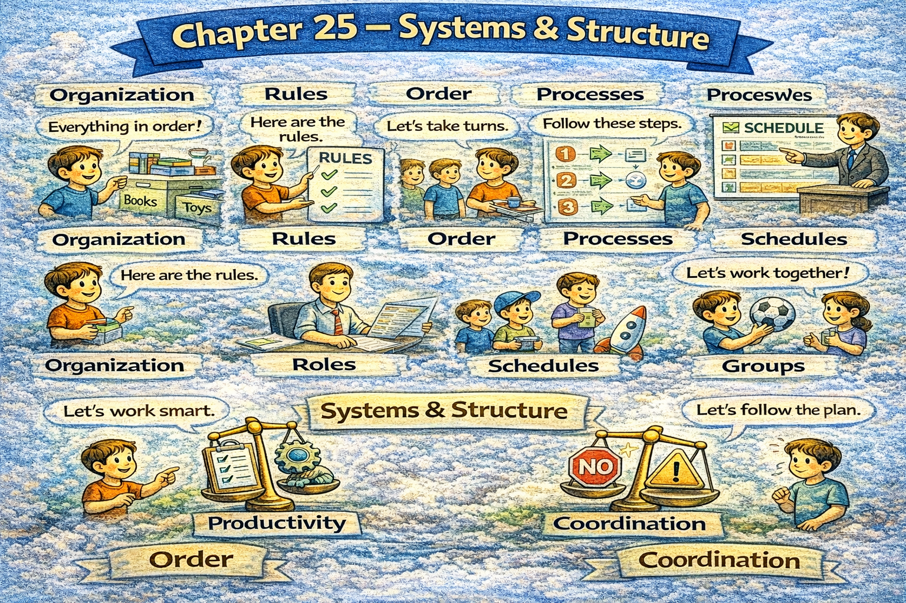

Chapter 25 — Systems & Structure

Micro Scene 1 — What Is a System?
1️⃣ Scene Text
A system consists of interconnected components that produce outcomes collectively.
Individual elements rarely function independently within a system.
If one component changes, the entire structure may adjust.
Systems operate through interaction rather than isolation.
I identify inputs, processes, and outputs to understand structure.
Boundaries define what belongs inside the system.
When feedback loops exist, behavior becomes dynamic.
Systems often generate results that exceed individual intention.
Structure constrains behavior.
Interdependence defines system stability.
Understanding the system clarifies cause and effect.
2️⃣ Core Verb Pool
consist
produce
function
change
adjust
operate
identify
define
exist
generate
constrain
clarify
3️⃣ Structure Patterns
X consists of + noun
If X + verb, Y + verb
X operates through + noun
X defines Y
When X + verb, Y + verb
X constrains Y
4️⃣ Replace & Extend
Replace system:
An organization consists of interdependent roles.
→ An ecosystem consists of interacting species.
→ A software system consists of integrated modules.
Replace constraint:
Structure constrains behavior.
→ Rules constrain decision-making.
→ Design constrains possibility.
Replace feedback:
When feedback exists, adaptation occurs.
→ When incentives shift, behavior changes.
5️⃣ Spoken Mode
A system isn’t just parts — it’s how the parts interact.
If one piece changes, the whole thing adjusts.
Structure shapes behavior.
You can’t understand outcomes without understanding the system.
🔎 Structural Notes
• “consists of” defines composition.
• “constrains” introduces structural limitation.
• Systems are interaction-based, not element-based.
Micro Scene 2 — Structure & Constraint
1️⃣ Scene Text
Structure defines what is possible and what is restricted.
Constraints do not eliminate freedom; they shape it.
If incentives are structured poorly, behavior distorts.
Rules influence outcomes more than intentions alone.
I analyze how design channels decision-making.
When boundaries are clear, coordination improves.
Loose structure increases flexibility but may reduce stability.
Tight constraints increase predictability but may limit innovation.
Every system balances control and adaptability.
Structure determines pattern.
Constraint produces direction.
2️⃣ Core Verb Pool
define
restrict
eliminate
shape
structure
distort
influence
analyze
channel
improve
increase
reduce
limit
balance
determine
produce
3️⃣ Structure Patterns
X defines what + clause
If X + verb, Y + verb
X influences Y more than Z
When X + verb, Y + verb
X increases A but reduces B
Every X balances A and B
4️⃣ Replace & Extend
Replace incentive:
If incentives reward speed…
→ If incentives reward accuracy…
→ If incentives reward visibility…
Replace balance:
Structure balances stability and flexibility.
→ Design balances control and creativity.
→ Policy balances risk and growth.
Replace direction:
Constraint directs energy.
→ Boundaries create focus.
→ Limits define movement.
5️⃣ Spoken Mode
Structure shapes behavior more than intention.
If incentives are wrong, outcomes shift.
Constraints don’t remove freedom — they guide it.
Every system balances flexibility and control.
🔎 Structural Notes
• Incentives = behavioral drivers.
• Constraint is directional, not purely restrictive.
• Systems require balance between stability and change.
Micro Scene 3 — Feedback & Adaptation
1️⃣ Scene Text
Feedback allows a system to adjust over time.
Without feedback, error accumulates silently.
If outcomes are measured consistently, adaptation becomes possible.
Negative feedback stabilizes behavior.
Positive feedback amplifies change.
I distinguish between corrective signals and reinforcing signals.
When feedback loops are delayed, instability increases.
Immediate feedback accelerates learning.
Systems evolve through repeated adjustment.
Ignoring feedback weakens performance.
Adaptation depends on information flow.
2️⃣ Core Verb Pool
allow
adjust
accumulate
measure
become
stabilize
amplify
distinguish
increase
accelerate
evolve
ignore
weaken
depend
3️⃣ Structure Patterns
X allows Y to + verb
Without X, Y + verb
If X + verb, Y + verb
X distinguishes between A and B
When X + verb, Y + verb
X depends on + noun
4️⃣ Replace & Extend
Replace feedback:
If performance is reviewed regularly…
→ If results are tracked carefully…
→ If signals are monitored…
Replace amplification:
Positive feedback increases growth.
→ Reinforcement accelerates expansion.
→ Success attracts more success.
Replace stability:
Negative feedback prevents escalation.
→ Correction restores balance.
→ Adjustment stabilizes behavior.
5️⃣ Spoken Mode
Feedback keeps the system stable.
Without it, mistakes build up.
If we measure results, we can improve.
Positive feedback amplifies — negative feedback corrects.
🔎 Structural Notes
• Negative feedback = stabilization mechanism.
• Positive feedback = amplification mechanism.
• Adaptation requires information flow.
Micro Scene 4 — Hierarchy & Coordination
1️⃣ Scene Text
Hierarchy organizes complexity by distributing roles across levels.
Not all decisions can be made at the same layer.
If authority is centralized excessively, responsiveness declines.
If authority is dispersed without coordination, fragmentation occurs.
Hierarchy clarifies responsibility and reporting lines.
Coordination aligns distributed actions toward a common objective.
When layers communicate effectively, efficiency increases.
Clear escalation paths prevent paralysis.
I evaluate whether structure supports execution.
Overlapping authority creates conflict.
Well-designed hierarchy improves stability without eliminating flexibility.
2️⃣ Core Verb Pool
organize
distribute
make
centralize
decline
disperse
occur
clarify
align
increase
prevent
evaluate
create
improve
eliminate
3️⃣ Structure Patterns
X organizes Y by + verb-ing
If X + verb, Y + verb
When X + verb, Y + verb
X prevents + noun
X improves A without + verb-ing B
4️⃣ Replace & Extend
Replace centralization:
If decisions are overly centralized…
→ If authority concentrates at the top…
→ If control is bottlenecked…
Replace fragmentation:
If coordination is weak…
→ If communication breaks down…
→ If roles are unclear…
Replace alignment:
Coordination aligns effort.
→ Structure synchronizes action.
→ Leadership integrates layers.
5️⃣ Spoken Mode
Hierarchy helps manage complexity.
If everything is centralized, things slow down.
If there’s no coordination, chaos follows.
Clear roles make execution easier.
🔎 Structural Notes
• Hierarchy = complexity management tool.
• Coordination = alignment mechanism.
• Stability requires clear authority boundaries.
Micro Scene 5 — Emergence & Unintended Consequences
1️⃣ Scene Text
Complex systems often produce outcomes that were not explicitly designed.
Emergent behavior arises from interaction among components.
If local decisions align unintentionally, global patterns form.
Not all consequences are predictable in advance.
I examine whether outcomes result from design or interaction.
Unintended consequences frequently follow policy change.
When incentives shift subtly, behavior adapts unexpectedly.
Emergence does not require central coordination.
Small adjustments can generate disproportionate effects.
Systems amplify interaction effects over time.
Understanding emergence requires observing patterns rather than isolated events.
2️⃣ Core Verb Pool
produce
design
arise
align
form
predict
examine
result
follow
shift
adapt
require
generate
amplify
observe
3️⃣ Structure Patterns
X often + verb
If X + verb, Y + verb
Not all X are + adjective
When X + verb, Y + verb
X requires + noun
X can generate + noun
4️⃣ Replace & Extend
Replace emergence:
Patterns emerge without intention.
→ Order forms from interaction.
→ Behavior evolves collectively.
Replace unintended consequences:
Policy change produces side effects.
→ New rules trigger unexpected outcomes.
→ Incentive shifts reshape behavior.
Replace amplification:
Small changes create large ripple effects.
→ Minor adjustments escalate over time.
→ Interaction multiplies impact.
5️⃣ Spoken Mode
Systems create outcomes nobody planned.
Small changes can have big effects.
Not everything is predictable.
Patterns emerge from interaction.
🔎 Structural Notes
• Emergence = system-level pattern beyond individual intent.
• Unintended consequences signal structural complexity.
• Local interaction → global pattern.
Micro Scene 6 — Stability & Failure Points
1️⃣ Scene Text
Every system contains points of stability and points of vulnerability.
Stability depends on redundancy and balanced interaction.
If a critical component fails, the entire system may collapse.
Failure points often remain invisible until stress increases.
I identify bottlenecks that restrict flow.
Resilience requires alternative pathways.
When pressure exceeds capacity, breakdown occurs.
Systems with distributed risk recover more quickly.
Centralized fragility amplifies disruption.
Stability is maintained through structural balance.
Understanding failure points prevents systemic collapse.
2️⃣ Core Verb Pool
contain
depend
fail
collapse
remain
increase
identify
restrict
require
exceed
occur
recover
amplify
maintain
prevent
3️⃣ Structure Patterns
X contains A and B
If X + verb, Y + verb
When X + verb, Y + verb
X requires + noun
X prevents + noun
4️⃣ Replace & Extend
Replace bottleneck:
A bottleneck restricts flow.
→ A weak link limits performance.
→ A single dependency increases fragility.
Replace resilience:
Resilience requires redundancy.
→ Stability requires diversification.
→ Recovery requires alternative routes.
Replace collapse:
If stress intensifies…
→ If pressure accumulates…
→ If demand exceeds supply…
5️⃣ Spoken Mode
Every system has weak points.
If a key part fails, everything can collapse.
Resilient systems have backups.
You prevent failure by finding bottlenecks early.
🔎 Structural Notes
• Bottleneck = flow restriction node.
• Redundancy = resilience mechanism.
• Collapse follows exceeded capacity.
🔸 Integration Scene — Systems Meta-Structure
Systems consist of interacting components.
Structure constrains behavior.
Incentives channel decisions.
Feedback enables adaptation.
Hierarchy organizes complexity.
Coordination aligns effort.
Emergence produces unintended patterns.
Small changes amplify through interaction.
Stability depends on balance.
Failure follows overload.
Redundancy increases resilience.
Bottlenecks restrict performance.
Legitimacy stabilizes authority.
Structure shapes outcome.
Interaction generates pattern.
Systems define possibility.
Integration Verb Focus
constrain
channel
adapt
coordinate
amplify
stabilize
distribute
prevent